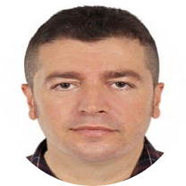

|  |
Abraham Anderson
|
I am a full-stack python developer, data scientist, and machine learning engineer. I live in Norway and have work permission that is valid for the entire Norway. I can write backend and frontend codes with programming, develop applications in MVC pattern. Additionally,I have very advanced knowledge and experience in machine learning, deep learning, computer vision, NLP and statistics. I can obtain data, clean analyze it, visualize via Matplotlib, Seaborn, and Plotly, make data engineering, make them ready before Machine Learning Algorithms, and deploy machine learning models. I write continuously codes in data science and machine learning , and share my codes in Github and Kaggle platforms. I ranked 345 best data scientist among more than 172 000 data scientists and machine learning practitioners. My python programming knowledge is equipped with the analytical and problem-solving skills to be successful in any data-driven environment. Moreover, I have a master's degree in political science and public administration with A grades for all subjects, thus I can write very efficient reports and feedbacks in academic level. I was ranked the best graduate in both high school and university due to my outstanding grades. I can learn very fast and efficiently anything I want to learn. Therefore, I can reach others in a short time even though they have begun for many years.
Link to Portfolio Website: Portfolio
| Date | Work |
|---|---|
| 01.2021 - 06.2021 | Teaching Assistant in Machine Learning |
| 07.2012 - 01.2016 | Researcher at Istanbul University |
| Machine Learning | ⭐⭐⭐⭐⭐ | Deep Learning | ⭐⭐⭐⭐⭐ | Python Programming Language | ⭐⭐⭐⭐⭐ |
| Artificial Neural Networks | ⭐⭐⭐⭐⭐ | Recurrent Neural Networks | ⭐⭐⭐⭐⭐ | Convolutional Neural Networks | ⭐⭐⭐⭐⭐ |
| Computer Vision | ⭐⭐⭐⭐⭐ | OpenCV | ⭐⭐⭐⭐⭐ | Data Science | ⭐⭐⭐⭐⭐ |
| Statistics | ⭐⭐⭐⭐⭐ | English | ⭐⭐⭐⭐⭐ | Norwegian | ⭐⭐⭐⭐⭐ |
| Tensorflow | ⭐⭐⭐⭐⭐ | Scikit Learn | ⭐⭐⭐⭐⭐ | Flask-Flask-Restfull | ⭐⭐⭐⭐⭐ |
| Git-Github | ⭐⭐⭐⭐⭐ | Data Visualization | ⭐⭐⭐⭐⭐ | SQL-MySQL-Sqlite | ⭐⭐⭐⭐⭐ |
| C Programming Language | ⭐⭐⭐⭐ | C# Programming Language | ⭐⭐⭐⭐ | Web Development | ⭐⭐⭐⭐ |